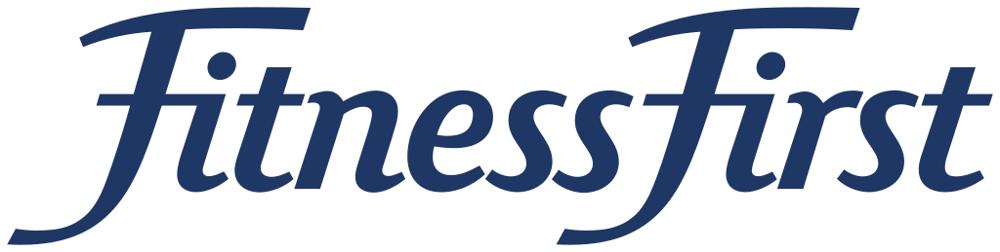

대표 로고대표 브랜드 마크
대표 로고대표 브랜드 마크피트니스 퍼스트 Fitness First
피트니스 퍼스트(Fitness First)는 영국에서 시작된 헬스클럽·피트니스 짐 체인 브랜드이다.
최종 업데이트
피트니스 퍼스트는 어떤 브랜드인가
피트니스 퍼스트(Fitness First)는 1993년 영국 본머스에서 마이크 발포어가 파산한 스쿼시 클럽을 인수해 출범시킨 글로벌 프리미엄 헬스클럽 체인이다. 1996년 런던 AIM 상장으로 자본을 확보해 유럽·아시아·중동·호주로 공격적으로 확장했고, 전성기에는 21개국 약 550개 클럽, 회원 150만 명, 직원 2만 명 규모에 달했다.
첫 번째 전환점은 1996년 상장을 통한 자본 동원과 다국가 확장이며, 두 번째는 2012년 사모펀드 부채 위기에 따른 구조조정과 권역별 사업 매각이다. 현재는 권역별로 소유권이 분리된 다중 지배구조 브랜드로 운영된다.
피트니스 퍼스트는 어떻게 봐야 할까
피트니스 퍼스트의 핵심은 '글로벌 단일 운영체에서 권역 분할 브랜드로'라는 역방향 궤적에 있다. 대다수 글로벌 체인이 단일 본사 통제로 확장을 이어가는 것과 달리, 이 브랜드는 사모펀드 부채와 저가 헬스장(퓨어짐, 더짐그룹 등)의 협공 속에서 시장별로 잘게 쪼개져 서로 다른 주인에게 팔렸다.
영국 사업은 2016년 DW스포츠가 약 7천만 파운드에 인수해 다시 프레이저스 그룹 산하로 들어갔고, 아시아 사업은 2017년 셀러브리티 피트니스와 합쳐 에볼루션 웰니스로 재편되어 오크트리와 나비스 캐피털이 공동 보유한다. 전략적 함의는 명확하다.
중간 가격대 프리미엄 포지션은 위에서 럭셔리(퓨어, 버진액티브), 아래에서 저가 무인 짐에 양면 압박을 받기 쉽다는 것이다. 한국 독자에게 이는 시사적이다.
한국은 동일하게 대형 헬스장이 줄폐업하고 부티크 스튜디오가 약진하는 시장 양극화를 겪고 있으며, 글로벌 프리미엄 체인이 한국 평균 대비 높은 가격으로 진입을 시도했으나 자리잡지 못한 전례가 있다. 즉 피트니스 퍼스트의 분할 매각사는 한국 피트니스 시장의 구조적 과제를 미리 보여준 사례로 읽힌다.
피트니스 퍼스트는 어떻게 시작되고 성장했나
1990년대 초 영국 피트니스 시장은 회원제 헬스클럽이 본격 대중화되던 시기였다. 회계사 출신 마이크 발포어는 1992년 본머스의 파산한 스쿼시 클럽을 사들여 이듬해인 1993년 이를 헬스클럽으로 전환, 피트니스 퍼스트를 창립했다.
첫 번째 전환점은 1996년으로, 회사는 런던 AIM에 약 1천4백만 파운드 가치로 상장하며 외부 자본을 끌어들였고 이후 다섯 차례 추가 자금을 조달해 영국 전역과 해외로 점포를 늘렸다. 확장은 가팔랐다.
2000년대 초중반 유럽, 동남아시아, 중동, 호주로 진출해 21개국 약 550개 클럽까지 성장했다. 두 번째 전환점은 소유권 이전이다.
2005년 사모펀드 BC파트너스가 약 8억3천5백만 파운드에 인수해 추가 확장에 나섰으나, 누적된 부채와 좌절된 기업공개가 발목을 잡았다. 2012년 회사는 파산 직전 임대료를 대폭 낮추는 CVA로 가까스로 회생했고, 오크트리 캐피털이 채무-출자 전환으로 경영권을 확보하면서 스페인·이탈리아·베네룩스 사업과 호주 일부 클럽을 잇따라 매각하기 시작했다.
피트니스 퍼스트의 브랜드 아이덴티티는 무엇인가
브랜드 가치는 '결과 중심의 프리미엄 동기부여'에 맞춰져 있다. 저가 무인 헬스장이 시장을 잠식하자 피트니스 퍼스트는 The Clearing과 협업해 약 2억2천5백만 파운드를 들인 글로벌 리브랜딩을 단행했고, 자신을 '피트니스 권위자'로 재정의하며 중간 시장을 벗어나 상향 포지셔닝을 추구했다.
비주얼 아이덴티티의 핵심은 기존 파란색에서 빨간색으로 바뀐 로고로, 강조된 'F' 형상과 360도 모티프를 통해 열정·에너지·강인함, 그리고 클럽을 넘어 삶 전반의 목표 달성이라는 메시지를 담는다. 타깃은 성과 지향적이며 전문 그룹 수업, 기능성 트레이닝 존, 프리미엄 장비를 기대하는 중상위 소득 이용자다.
보이스는 진지하고 동기부여적이며 전문성을 강조하는 톤을 유지한다.
피트니스 퍼스트의 대표 제품과 서비스는 무엇인가
핵심 서비스는 월 회원제 헬스클럽 멤버십으로, 가격대는 권역에 따라 월 약 40~120파운드 수준이며 저가 짐보다 높다. 제공 포맷은 프리미엄 장비를 갖춘 웨이트·유산소 존, 전문가 주도 그룹 운동 수업, 기능성 트레이닝 구역, 개인 트레이닝 등으로 구성된다.
채널은 도심·복합시설 중심의 오프라인 클럽 네트워크가 중심이며, 권역별 멤버십 앱을 통한 예약·관리 디지털 접점을 함께 운영한다.
피트니스 퍼스트는 지금 어떤 상태인가
피트니스 퍼스트는 단일 본사가 통제하는 글로벌 기업이 아니라 권역별로 소유권이 분리된 브랜드다. 영국 사업의 등기상 본거지는 잉글랜드 풀(Poole)로, 2016년 DW스포츠가 영국 62개 클럽을 인수한 뒤 DW스포츠가 2020년 프레이저스 그룹에 편입되며 현재 프레이저스 그룹 계열로 운영되고, 점포 수는 2023년 7월 기준 약 36개로 축소됐다.
2025년 7월 마크 다이퍼가 신임 CEO로 합류했다. 아시아 사업은 2017년 셀러브리티 피트니스와 합병해 싱가포르 소재 에볼루션 웰니스로 재편됐으며, 오크트리 캐피털과 나비스 캐피털 파트너스가 공동 보유한 채 인도네시아·말레이시아·태국·싱가포르 등에서 운영된다.
중동·북아프리카 사업은 별도 운영으로 다수 클럽을 유지한다. 홍콩 사업은 2022년 청산됐다.
한국 시장의 공식 운영 현황은 미공개.
피트니스 퍼스트 로고는 어떻게 변해왔나
대표 로고대표 브랜드 마크
대표 로고 1보관 이미지 1자주 묻는 질문
피트니스 퍼스트는 어느 나라 브랜드인가요?
피트니스 퍼스트는 영국의 브랜드·비즈니스 브랜드입니다.
피트니스 퍼스트의 브랜드 아이덴티티는 무엇인가요?
브랜드 가치는 '결과 중심의 프리미엄 동기부여'에 맞춰져 있다.
피트니스 퍼스트의 대표 제품은 무엇인가요?
핵심 서비스는 월 회원제 헬스클럽 멤버십으로, 가격대는 권역에 따라 월 약 40~120파운드 수준이며 저가 짐보다
피트니스 퍼스트는 어느 기업이 소유하고 있나요?
피트니스 퍼스트는 단일 본사가 통제하는 글로벌 기업이 아니라 권역별로 소유권이 분리된 브랜드다.
피트니스 퍼스트의 공식 웹사이트는 어디인가요?
피트니스 퍼스트의 공식 웹사이트는 https://www.fitnessfirst.co.uk/ 입니다.
출처와 검증
피트니스 퍼스트 관련 참고: 공식 웹사이트. 브랜드명은 한글과 원어를 함께 표기하되 데이터에 없는 표기는 만들지 않습니다. 기원 국가·설립연도는 검수된 정의문에서 확인된 값을 우선하고, 없을 때만 공식 웹사이트 URL이 일치하는 위키데이터 개체의 값을 씁니다.